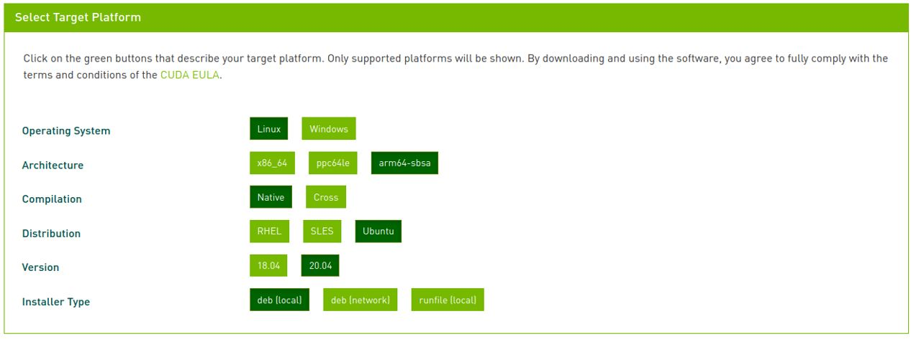
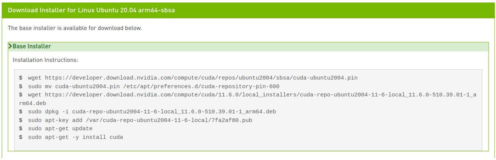
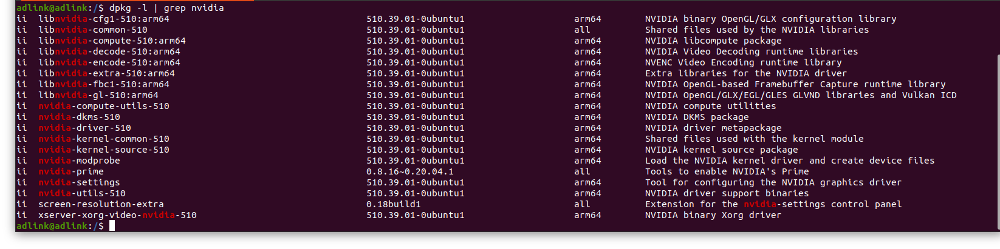
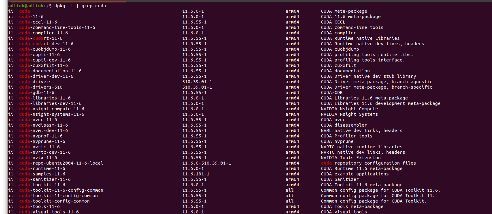
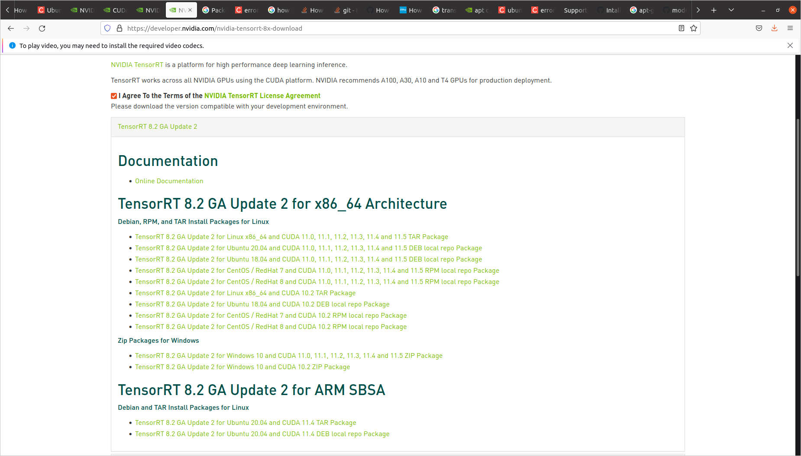
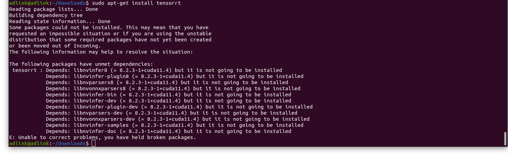
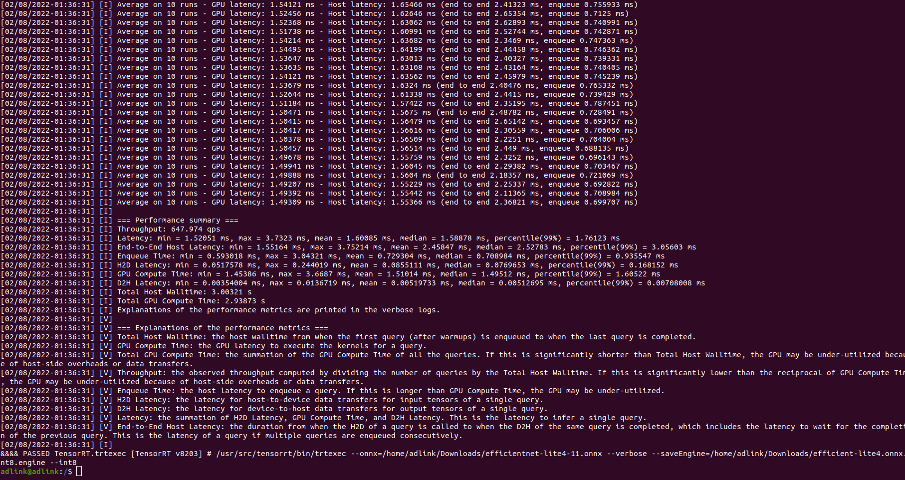

NVIDIA CUDA Installation GuideThe following describes how to enable NVIDIA GPU on your AVA/AADP/AADK/AADR Developer Platform. Before you start (configure Ubuntu 20.04)1. Log into your AVA/AADP/AADK/AADR Developer Platform using the root password. 2. Update the apt-get package manager by executing the following command: sudo apt-get update && sudo apt-get upgrade Note: This command makes sure that you have the latest packages and repositories updated in your package manager. Once the command execution is completed, you can proceed to install your NVDIA CUDA. Step 1: Installing Ubuntu Server GUIInstall tasksel1. To install Ubuntu Server GUI (graphical user interface), we suggest using tasksel, a tool that can install multiple packages in one coordinated process. 2. To install tasksel and Ubuntu Server GUI, please run the following commands in sequence and select the software you want to install, as exemplified below. sudo apt-get install tasksel sudo tasksel Note: To select a software, simply move to it and press [SPACE]. Once finished, please reboot your system. Step 2: Installing CUDA-11.6 for ArmFirst, check your driver is of the correct version by using the following command. sudo dpkg -l | grep nvidia Download CUDA-11.61. On NVIDIA’s website https://developer.nvidia.com/cuda-download, select the corresponding CUDA for Arm (11.6).  2. Execute the following commands in sequence to install.  Once installed, you can go to ‘’/usr/local/‘’to check the version of the CUDA installed. Export Path3. For the CUDA to work, you need to set the path pointing to CUDA binaries by executing the following commands. export CUDA_HOME = /usr/local/cuda-11.6export PATH = $PATH: $CUDA_HOME/binexport LD_LIBRARY_PATH = ${LD_LIBRARY_PATH}: /usr/local/cuda-11.6/lib64 4. Exit and then save changes source .bashrc 5. After installing, go to the home directory and run the following commands to check your CUDA version to finish. If the nvidia-smi command doesn’t work, please reboot your system and try again. nvcc --versionnvidia-smi Step 3: Installing cuDNN-11.8 for Arm1. To download cuDNN libraries, go to https://developer.nvidia.com/cudnn and click Download cuDNN. You will need to log into your NVIDIA developer account. 2. After logging in and accepting their terms and conditions, select the installer for ubuntu 20.04 aarch64sbsaa (Deb).3. To install, you can use the following dpkg commands. sudo dpkg -i <cuddnn file name> dpkg -l | grep nvidia  dpkg -l | grep cuda  Step 4: Installing TensorRT1. Go to https://developer.nvidia.com/tensorrt.2. Click Download now and select the TensorRT ARM SBSA according to your ubuntu and cuda environment. Agree to their license terms to download.  Install using deb package3. To install using deb package, execute the following commands in sequence. sudo dpkg -i nv-tensorrt-repo-ubuntu1x04-cudax.x-trt5.x.x.x-ga-yyyymmdd_1-1_amd64.deb sudo apt-key add /var/nv-tensorrt-repo-cudax.x-trt5.x.x.x-ga-yyyymmdd/7fa2af80.pub sudo apt-get updatesudo apt-get install tensorrt If you run into the following error during installation, you can try resolving it by installing the dependencies one by one manually.  cd /var/nv-tensorrt-repo-ubuntu2004-cuda11.4-trt8.2.3.0-ga-20220113 dpkg -i libnvinfer-dev_8.2.3-1+cuda11.4_arm64.deb dpkg -i libnvonnxparsers-dev_8.2.3-1+cuda11.4_arm64.deb dpkg -i python3-libnvinfer-dev_8.2.3-1+cuda11.4_arm64.deb dpkg -i graphsurgeon-tf_8.2.3-1+cuda11.4_arm64.deb dpkg -i libnvinfer-doc_8.2.3-1+cuda11.4_all.deb dpkg -i libnvparsers8_8.2.3-1+cuda11.4_arm64.deb dpkg -i libcudnn8_8.2.1.32-1+cuda11.3_arm64.deb dpkg -i libnvinfer-plugin8_8.2.3-1+cuda11.4_arm64.deb dpkg -i libnvparsers-dev_8.2.3-1+cuda11.4_arm64.deb dpkg -i libcudnn8-dev_8.2.1.32-1+cuda11.3_arm64.deb dpkg -i libnvinfer-plugin-dev_8.2.3-1+cuda11.4_arm64.deb dpkg -i onnx-graphsurgeon_8.2.3-1+cuda11.4_arm64.deb dpkg -i tensorrt_8.2.3.0-1+cuda11.4_arm64.deb dpkg -i libnvinfer8_8.2.3-1+cuda11.4_arm64.deb dpkg -i libnvinfer-samples_8.2.3-1+cuda11.4_all.deb dpkg -i uff-converter-tf_8.2.3-1+cuda11.4_arm64.deb dpkg -i libnvinfer-bin_8.2.3-1+cuda11.4_arm64.deb dpkg -i libnvonnxparsers8_8.2.3-1+cuda11.4_arm64.deb dpkg -i python3-libnvinfer_8.2.3-1+cuda11.4_arm64.deb If you would like to run the samples that require ONNX graphsurgeon or use the Python module for your project, run: sudo apt install python3-pippython3 -m pip install numpy onnxsudo apt-get install onnx-graphsurgeon 4. Verify your installation by running the following command. dpkg -l | grep TensorRT You should see something similar to the following. Benchmarking TensorRTDownload onnx5. Go to https://github.com/onnx/models/blob/master/vision/classification/efficientnet-lite4/model/efficientnet-lite4-11.onnx and download it. 6. Once downloaded, go to its download directory and run the following commands. /usr/src/tensorrt/bin/trtexec –help/usr/src/tensorrt/bin/trtexec --onnx=/home/adlink/Downloads/efficientnet-lite4-11.onnx --verbose --saveEngine=/home/adlink/Downloads/efficientnet-lite4-11.onnx.int8.engine –i nt8 Result: 